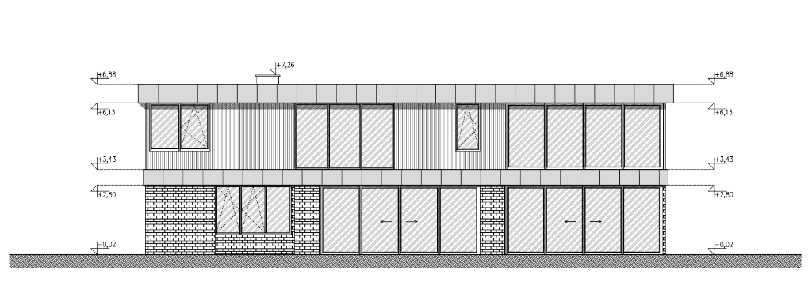

Exterior architectural elevation of the southern garden facade looking North towards the building.
Configured with direction: "east" and overall elevation length of 20,990 mm.
Includes dynamic multi-sash window and HST terrace sliding door components, elevation levels, and live database synchronization.
Hover or click the numbered markers on the source architectural drawing to inspect each opening and elevation level.

Unlike the North Facade (which looks South and has direction: "west"), the South Facade looks North from the garden and has direction: "east".
south_facade)
• Position on Map (Left Edge): 20,990 mm (West Corner)
• Direction: "east" (Left-to-right moves West → East)
• Overall Length: 20,990 mm (East Corner at 0 mm)
• Point 0 / Axis 6 (Oś 6): Located 290 mm from the right edge (at Screen X = 20,700 mm)
• Screen Formula: localX = 20,990 - (win.x + win.width)
• Increasing global X by +100 mm moves a window Westward, which shifts it to the LEFT on the South Facade.
• Decreasing global X by -100 mm moves a window Eastward, which shifts it to the RIGHT on the South Facade.
• Projecting Left Ground Floor (0 to 6,010 mm: 2,810 + 3,000 O7 + 200 brick): Aligns at 6,010 mm with the left edge of upper window O12 and casts a depth shadow onto the recessed 1,000 mm brick pier.
• At 14,490 to 20,790 mm: Ground HST door O4 aligns vertically with upper window O10.
Complete schedule of all 7 window and terrace glazing openings on the South Facade (20,990 mm overall length). Values synchronize automatically with the active window version and live Architecture Database.
| Symbol | Floor / Room | Screen Offset (West → East) | Global X (mm) | Width (mm) | Height (mm) | Sill (hp) | Sashes & Configuration |
|---|